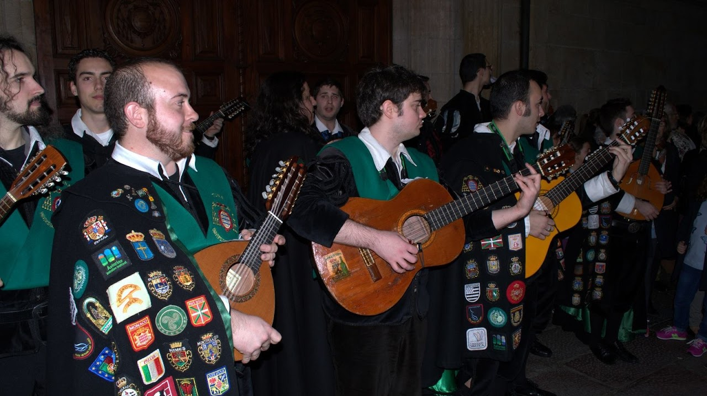
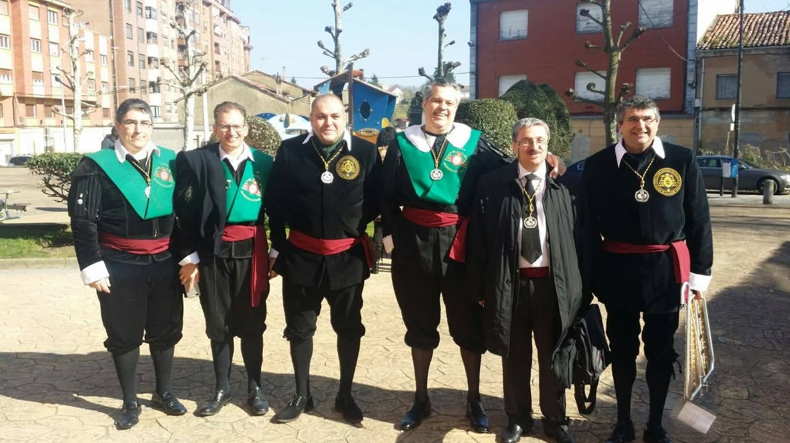
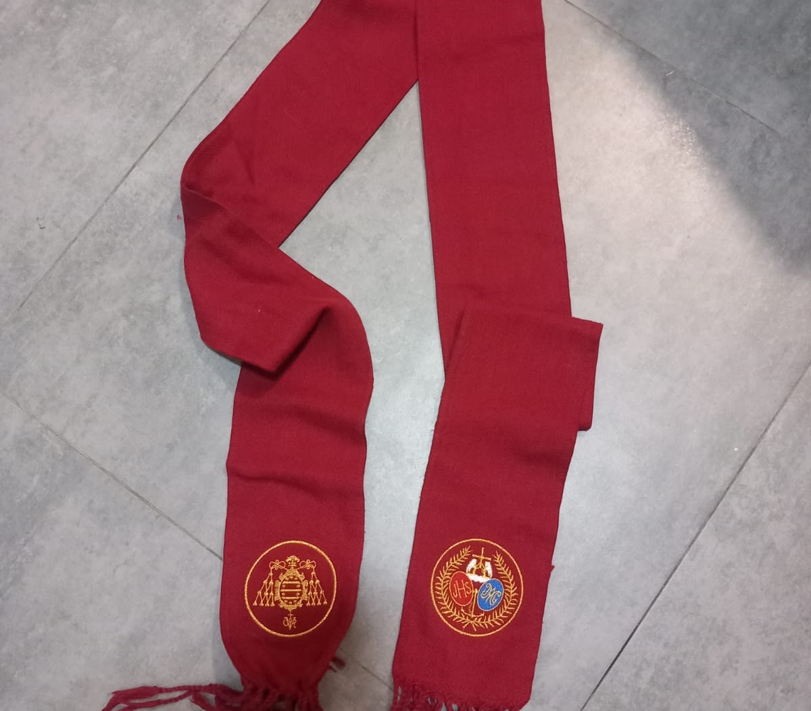
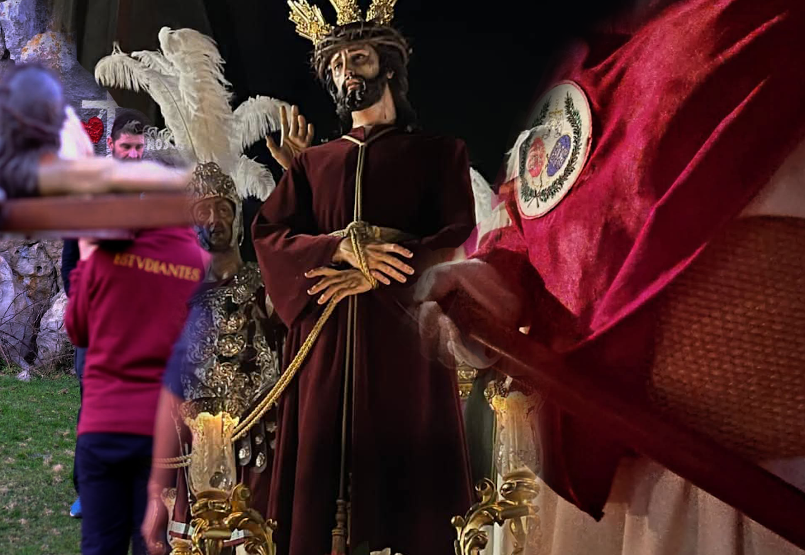
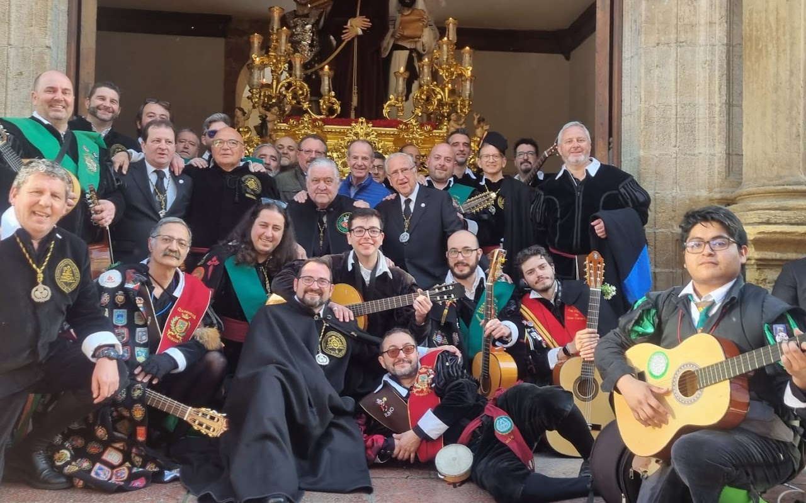

Nuestra Historia
Un recorrido por la tradición que une a la Tuna Universitaria de Oviedo con la Hermandad de los Estudiantes y la Tuna Antigua de la Universidad de Oviedo.
Los Orígenes
Corría el año 2008 cuando una, muy joven, Hermandad de los Estudiantes de Oviedo, proponía colaborar a los miembros de la Muy Gallarda y Trovadora Tuna Universitaria de Oviedo, que por aquel entonces se encontraban en activo, entonando algún tema que pudiera coincidir con la Semana Santa Ovetense.
Como Tuna, no acostumbraban a interpretar temas que gozasen de la solemnidad requerida y adecuada para el acto que se les proponía, y por ello tuvieron que montar, ensayar e interpretar nuevos temas para aquel evento tan extraño como novedoso para la Vetusta ciudad.
Dos temas fueron los que se prepararon aquel año para el debut que, en sus arcaicos inicios, se interpretaban en dos momentos esenciales y emotivos a la par.
Momentos Clave
La salida del Santísimo Cristo de la Misericordia a hombros de Los Antiguos Caballeros Legionarios de Asturias, en la tarde del Domingo de Ramos, era el primer momento en el que la Tuna interpretaba su particular "Saeta", adaptación realizada de la obra de Joan Manuel Serrat con la letra del poeta Antonio Machado, y la adaptación, también para la Tuna, de la marcha militar y canto litúrgico "La Muerte no es el Final".
El segundo de los momentos, y quizás para muchos uno de los emotivos, se llevaba a cabo durante el encuentro entre el Santísimo Cristo de la Misericordia y la Santísima Virgen de la Amargura, al paso del primero por la Plaza Feijoo.
Después del encuentro y "los bailes" entre los pasos, la Tuna Universitaria de Oviedo se colocaba entre ambos pasos y volvía a interpretar ambos temas para la Imagen portada por los costaleros de la Hermandad de Los Estudiantes.
"Más que una procesión, es el latir de una Hemandad y de los Tunos de toda España que salen al encuentro de su ciudad."
La Evolución hacia La Madrugá
En 2011, cuando la Hermandad de Los Estudiantes de Oviedo recibe, por fin, la imagen del Santísimo Cristo de la Sentencia (El Señor de la Sentencia) y estrena su paso a costal en la madrugada del Viernes Santo saliendo por la puerta principal del Edificio Histórico de la Universidad de Oviedo, el cambio se hizo evidente ya que, la Tuna Universitaria de Oviedo, también cambia el emplazamientos (y el día) para la interpretación de aquellos dos temas preparados 4 años antes.
La emocionante salida, a costal y de rodillas, por el arco de la puerta del edificio histórico (y antigua facultad de derecho) se complementa a la perfección con el sonido y emotividad de los dos temas de antaño, al son de bandurrias y guitarras. Todo ello haciendo de "La Madrugá" de Los Estudiantes un amalgama de actividades religiosas, a la par que culturales, y que desembocan (nos atrevemos a decir desde este humilde rincón) en la mejor procesión de todo el norte de España.

No todo ha sido un camino de rosas
Como bien sabemos todos los que llegamos a es web-app, la Tuna es algo cíclico que, en ocasiones y pese a todos los intentos, no cuenta con el relevo generacional que nos gustaría, y en los años 2015 y 2016, esto ocurría con la Tuna Universitaria de Oviedo.
Gracias Dios (o al destino) y la inquietud de aquellos antiguos tunos de las diferentes tunas de todo el distrito universitario de Oviedo, que el 19 Junio de 2015 decidieron dar un paso más hacia adelante, y fundar la Tuna Antigua de la Universidad de Oviedo, la tradición de colaborar con la Hermandad de Los Estudiantes de Oviedo nunca llegó a perderse.
Además de haber mantenido la tradición intacta, Tuna Antigua de la Universidad de Oviedo es la culpable de haber ampliado el repertorio con dos temas más. En esos momento, se ampliaba de dos a cuatro temas, incluyendo entre el repertorio el "Gaudeamus Igitur" como himno universitario y la canción litúrgica adaptada a la Tuna con título "Cerca de Tí".

El Fajín
En el año 2018 La Hermandad de los Estudiantes de Oviedo llevó a cabo su primer otorgamiento de los fajines color burdeos para los tunos que a su vez, eran hermanos en la propia cofradía.
Ya posteriormente, en 2022, el otorgamiento se extiende a todos los tunos participantes en los eventos de colaboración relacionados con el Jueves Santo.
En sus inicios, el fajín se entregaba en ceremonia oficial en el interior de la Parroquia San Francisco Javier de la Tenderina, y eran entregados por el párroco titular de dicha esta Parroquia, bendecidos y en presencia de la cúpula representativa de La Hermandad de Los Estudiantes.

El Rojo burdeos, característico de la Hermandad de Los Estudiantes, es portado en todas y cada de sus indumentarias, así como en la toga que viste el Santísimo Señor de La Sentencia en la procesión de "La Madrugá".
Este detalle convierte a todos los tunos participantes en "Hermanos" honoríficos para el Jueves Santo de la ciudad de Oviedo.

La Ronda
En el año 2022, se instaura una nueva tradición de la Hermanadad de Los Estudiantes con la Tuna Universitaria de Oviedo y la Tuna Antigua de la Universidad de Oviedo.
Se extiende en solemne acto el otorgamiento de los fajines a todos los tunos participantes en La Ronda y la procesión de "La Madrugá" ovetense.
Muchos son los tunos de otras ciudades venidos para colaborar en tan magno evento. Tunas como La Cuarentuna Universitaria de Burgos, La Tuna de la Universidad de León, La Tuna de Veterinaria de Lugo, La Tuna Universitaria de Santander, La Tuna Universitaria de Las Palmas y La Tuna Femenina de la Universidad de Oviedo, han participado en nuestro Jueves Santo, y todos los miembros que llegaron a nuestra ciudad para colaborar con nuestras tunas, han sido otorgados con el Fajin de la Hermandad de Los Estudiantes de Oviedo.
Para esta parte de nuestro Jueves Santo, quisimos recordar, también, a la Madre de Nuestro Señor, y para ella añadimos a nuestro repertorio de, hasta entonces cuatro temas, la canción "Virgen de Amor".

El emotivo 2025
El año del accidente en la mina de Cerredo (Zarréu), en el municipio de Degaña, causa una gran conmoción en todo el Principado de Asturias y la provincia de León. La explosión de gas grisú que terminó con la vida de cinco mineros causó un revuelo mediático debido a las condiciones de trabajo, permisos, y las responsabilidades de la empresa que llevaba a cabo la explotación minera.
La Tuna Universitaria de Oviedo y La Tuna Antigua de la Universidad de Oviedo acordaron, entonces, aprovechar el momento de "La Madrugá" Ovetense para realizar su pequeño homenaje a estas cinco vidas, entonando el "Santa Bárbara Bendita" con su última estrofa ligeramente modificada para reflejar exactamente su homenaje.
Este homenaje también se mediatizó más de lo que nos hubiera gustado inicialmente, copando prensa, R.R.S.S. y el propio boca a boca de la población asistente al evento.